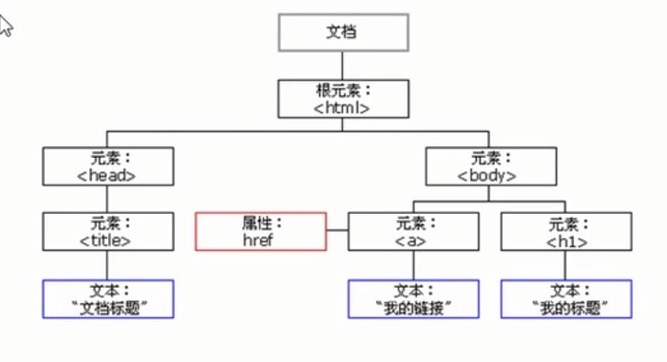

WebAPIs
1. Web APIs简介
1.1 JS的组成
- ECMAScript JS语法----JS基础
- DOM 页面文档对象模型----Web APIs
- BOM 浏览器对象模型----Web APIs
1.2 API和Web API
API（Application Programming Interface，应用程序编程接口），API是给程序员提供的一种工具，以便能更轻松的实现想要完成的功能。
Web API是浏览器提供的一台操作浏览器功能和页面元素的API（BOM和DOM），主要针对浏览器做交互效果，一般都有输入输出，很多都是方法
2. DOM
- DOM简介
- 获取元素
- 事件基础
- 操作元素
- 节点操作
2.1 DOM简介
DOM（Document Object Model，文档对象模型），是W3C组织推荐的处理可扩展标记语言的标准编程接口
DOM树

- 文档：一个页面就是一个文档，DOM中用document表示
- 元素：页面中的所有标签都是元素，DOM中用element表示
- 节点：网页中的所有内容都是节点（标签，属性，文本，注释等），DOM中用node表示
- DOM中把以上内容都看作对象
2.2 获取元素
页面中获取元素主要通过：①根据ID获取；②根据标签名获取；③根据H5新增的方法获取；④特殊元素获取；
- 根据ID获取：var obj = document.getElementById('要获取元素的ID');console.dir(obj);打印返回的元素对象，更好的查看里面的属性和方法
- 根据标签名获取：var obj = document.getElementsByTagName('标签名');返回的是带有指定标签名的对象的集合，以伪数组的方式存储，
所以我们想要操作里面的元素就需要遍历，得到的元素是动态的
- 根据H5新增的方法获取：var obj = document.getElementsByClassName('类名');根据类名返回元素对象集合
var obj = document.querySelector('选择器');根据指定选择器返回第一个元素对象，里面的选择器要加符号 如.nav #box
var obj = document.querySelectorAll('选择器');根据指定选择器返回所有元素对象的集合
- 特殊元素获取：var obj = document.body;返回body元素的对象；var obj = document.documentElement;返回HTML元素对象
2.3 事件基础
事件由三部分组成：事件源，事件类型，事件处理程序
- 事件源：事件被触发的对象
- 事件类型：如何触发，什么事件
- 事件处理程序：通过函数赋值形式
执行事件的步骤：①获取事件源；②注册事件（绑定事件）；③添加事件处理程序（采取函数赋值形式）
常见的鼠标事件：
- onclick 鼠标点击左键触发
- onmouseover 鼠标经过触发
- onmouseout 鼠标离开触发
- onfocus 获得鼠标焦点触发
- onblur 失去鼠标焦点触发
- onmousemove 鼠标移动触发
- onmouseup 鼠标弹起触发
- onmousedown 鼠标按下触发
2.4 操作元素
2.4.1 改变元素内容
innerText和innerHTML都可以改变元素内容，但他们有一定区别
- element.innerText;去除（不识别）HTML标签，同时空格和换行也会去掉
- element.innerHTML;包括（识别）HTML标签，可以获取元素里面的内容
2.4.2 常用元素的属性操作：获取元素后直接赋值
常用元素：①innerText,innerHTML改变元素内容；②src，href路径；③id，alt，title；